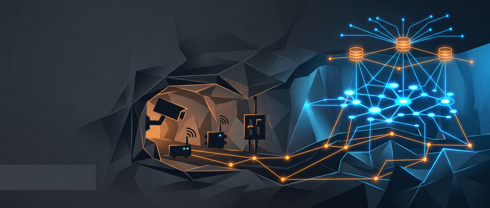

深部开采工程视频监测监控系统
面向地下矿山深部开采和重点避险区域，建设“环境参数监测 + 视频实时监控 + 语音广播联动 + 平台标准对接”的安全生产支撑系统， 将关键区域的风险状态转化为可视、可告警、可追溯的数据资产。
案例内容已按对外展示口径脱敏，重点呈现矿山重点区域监测、传输组网、联动告警与平台对接能力。

项目概述
以安全生产为牵引，补齐深部开采关键区域的可视化监测与数据接入能力。
建设背景
地下矿山深部开采环境复杂，避险硐室及周边巷道需要持续掌握环境参数、视频状态和告警事件，为安全管理提供客观依据。
系统定位
系统既是面向现场安全的监测监控平台，也是向上级融合平台提供标准化数据入口的基础能力。
建设目标
实现重点区域可视、异常可警、事件可查、数据可接，为调度指挥、应急联动和后续智能化升级奠定基础。
建设范围
采用中心站、网络传输、现场设备三层架构，覆盖从井下采集到地面调度的完整链路。
中心站
- 监测监控与视频操作终端
- 数据接收、存储、统计分析与报警
- 视频预览、回放、抓拍和云台控制
- 与既有平台进行数据对接
网络传输层
- 以光纤作为主干传输介质
- 通过工业交换机和光纤收发设备组网
- 保障视频和监测数据稳定回传
- 适配井下长距离、复杂环境传输
现场设备层
- 监控分站汇聚现场监测数据
- 风量、一氧化碳、烟雾等环境传感器
- 网络摄像机与前端防护设备
- 语音、广播和配套供电设施
关键技术
围绕矿山复杂工况，强调可靠传输、标准接口和便捷运维。
标准与合规
系统设计参考矿山通信、监测、控制等相关规范，现场设备按工业环境防护要求选型，满足长期稳定运行需求。
开放接口
通过 OPC、FTP、ODBC 等标准化接口或数据通道，为六大系统及后续融合平台提供可集成的数据入口。
告警与运维
支持异常参数提示、声光或弹窗告警、日志留痕、录像回放和远程查看，便于值守人员快速判断现场状态。
典型应用场景
从现场感知、调度指挥到事件追溯，形成安全管理闭环。
重点区域安全监测
- 避险硐室内外环境参数监测
- 巷道关键点位视频巡检
- 烟雾、气体、风量等异常状态提示
远程指挥与应急联动
- 值班端集中查看视频和监测数据
- 通过广播或语音终端进行现场通知
- 结合录像和日志完成事件复盘
项目价值
把“看不见的风险”转化为可判断、可处置、可追溯的管理信号。
扩展方向
在监测监控底座之上，可继续演进为更智能的矿山安全应用。
AI 视频分析
增加人员闯入、烟火识别、设备异常、拥堵滞留等智能算法，提升主动发现风险的能力。
多源融合告警
将视频、环境传感器、人员定位、通风等数据综合判断，降低误报漏报，提升告警可信度。
大屏与移动端协同
通过调度大屏、移动巡检和工单联动，让发现、派发、处置、复盘形成闭环。